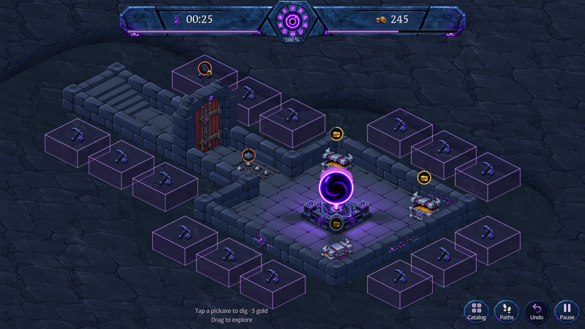

Le chevauchement venait de la projection : la base était dans le creux, mais les faces visibles se dessinaient par-dessus la roche extérieure. Le bord est désormais reculé du côté de la caméra selon la hauteur des cubes. Une petite marge protège aussi les coins arrondis.
Les dimensions, la hauteur et la position des cubes sont inchangées. La coupe verticale et le fond en contrebas restent présents. Mise à jour dans DigBlocksPreview uniquement.

Capture Godot · 1280 × 720 · Après correction
Avant correction : les bases ne croisaient pas la roche, mais 15 contrôles de faces projetées échouaient dans le donjon initial et après un creusement. Le nouveau contrôle intersecte toutes les faces des cubes avec la roche supérieure, au lieu de vérifier uniquement le centre de leur base.
2 109 contrôles passent, avec 24 creusements réels puis leurs 24 annulations (graine 241025). La première correction révélait encore de minuscules contacts dans les coins ; la marge de 0,04 case les supprime. Le décalage vers l’avant est calculé à partir de la projection de la hauteur des murs : environ 0,384 case sur chacun des deux axes. La disposition des cubes conserve sa référence de 1,35 case et son décalage précédent.
30 contrôles de coupe, 337 contrôles d’interaction, 12 974 contrôles de volumes/espacement et 7 contrôles de maçonnerie passent, avec sorties d’erreur vides. Captures natives inspectées en bureau, paysage et portrait. Le terrain ne dépend ni du budget ni de la visibilité des actions.
Le contrôle historique d’occultation conserve ses 14 vérifications. Le rapport de la nouvelle coupe signale explicitement les vues sans recouvrement stable à comparer : celles-ci ne sont pas comptées comme des validations pixel.
Reproduction : godot --headless --path . --script res://tools/verify_dig_recess_fit.gd, puis les fixtures natives capture_dig_blocks.gd et verify_excavated_recess.gd. Aucun nouveau sprite, accès aux sauvegardes joueur, APK, commit ou push. Pas de validation exhaustive de toutes les cartes ni de profilage sur téléphone physique. 31 octobre 2026.